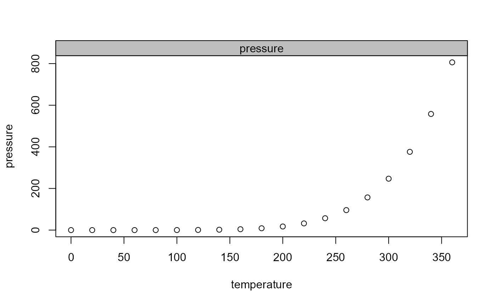

The function can be used to add a title to a plot surrounded by a rectangular box. This is useful for plotting several plots in narrow distances.
Arguments
- label
the main title
- bg
the background color of the box.
- border
the border color of the box
- col
the font color of the title
- xjust
the x-justification of the text. This can be
c(0, 0.5, 1)for left, middle- and right alignement.- line
on which MARgin line, starting at 0 counting outwards
- ...
the dots are passed to the
textfunction, which can be used to change font and similar arguments.
See also
Other graphics.annotation:
barText(),
boxedText(),
colLegend(),
errBars(),
stamp(),
textLegend()
Examples
plot(pressure)
titleRect("pressure")
